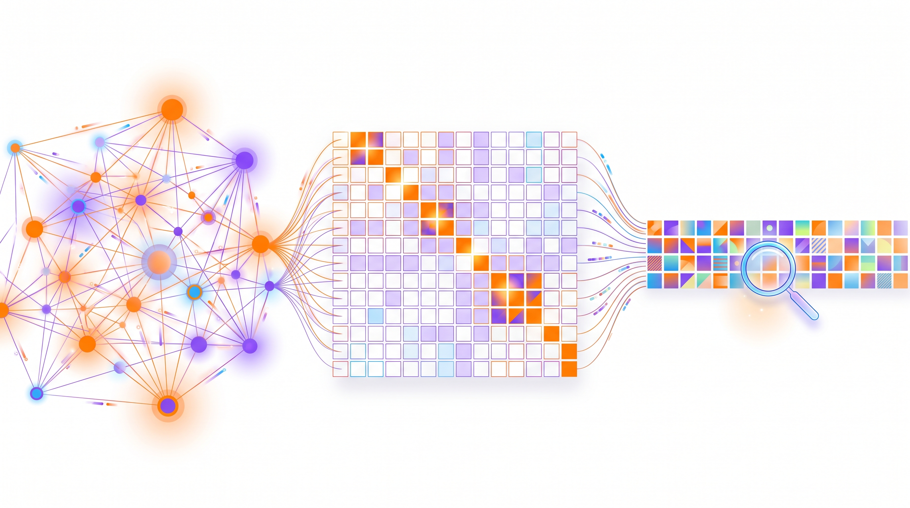
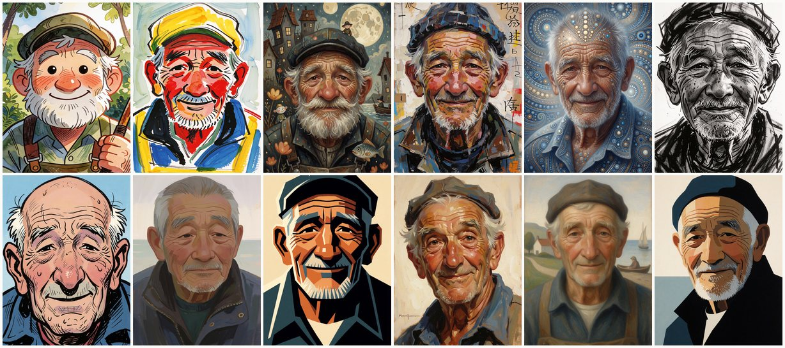
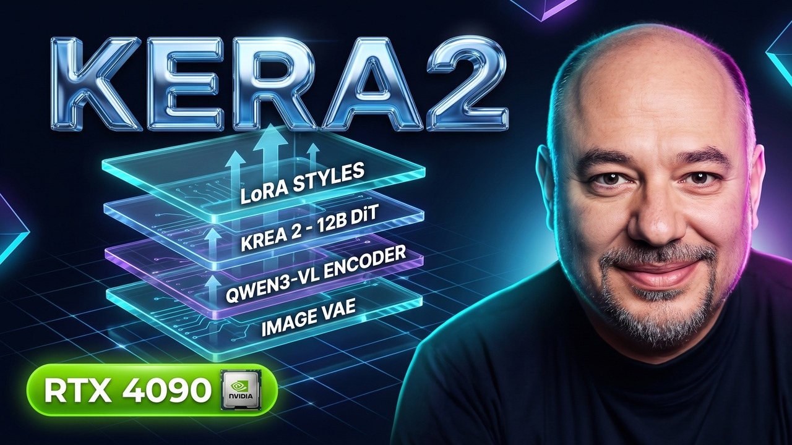
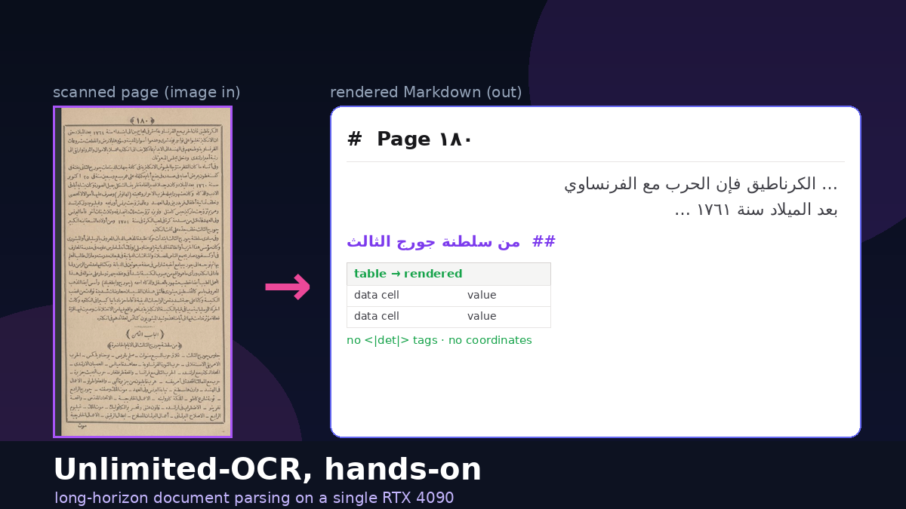
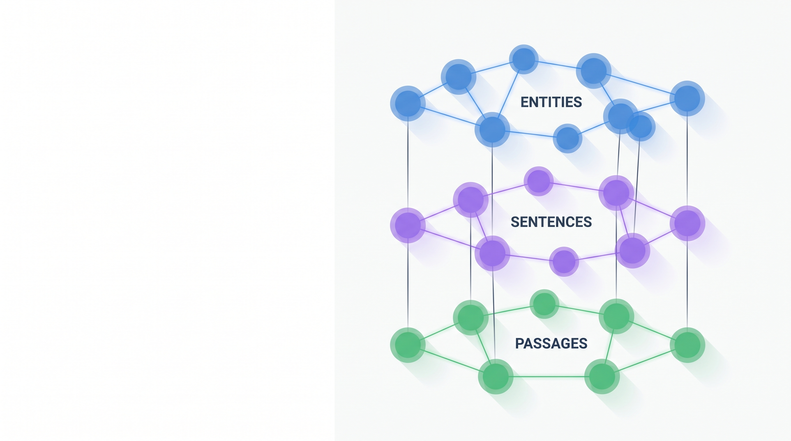
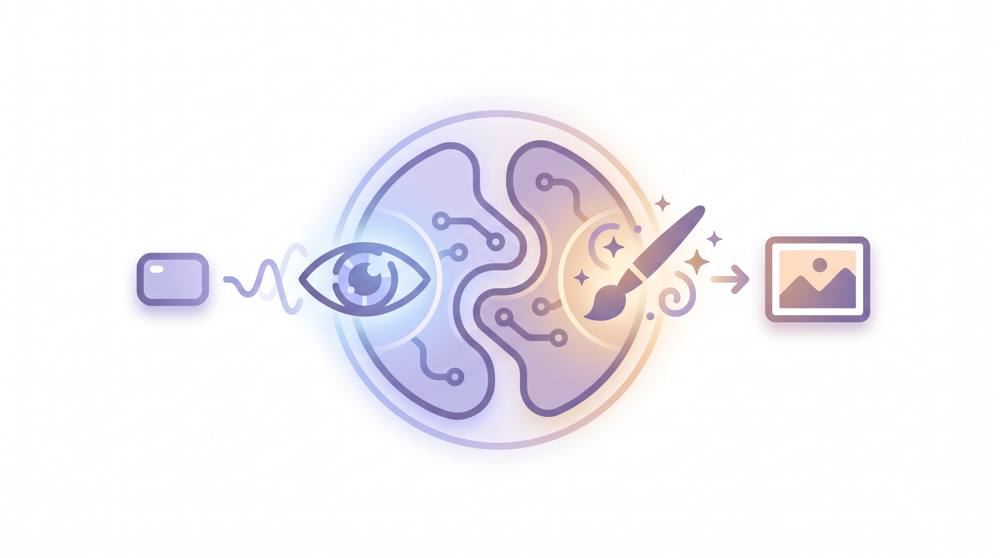
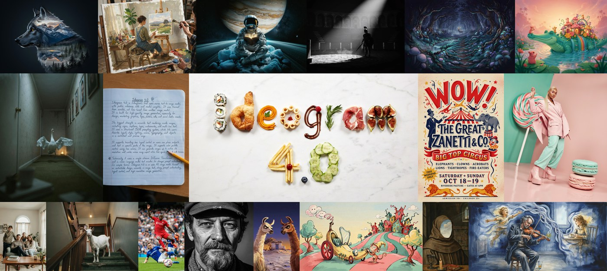
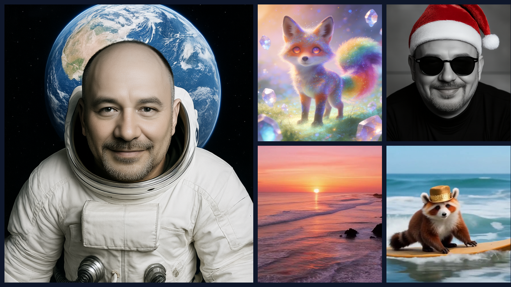
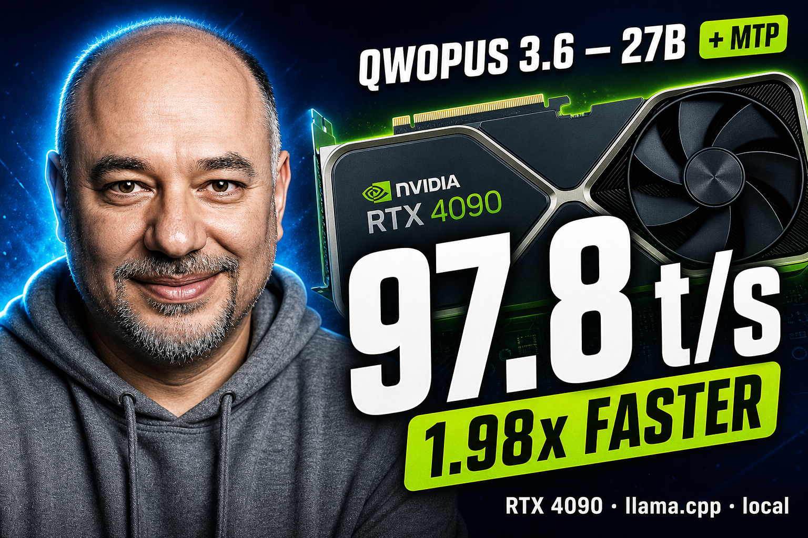

Measured on real silicon, not press releases.
Long-form capability tours, quantization recipes, and GraphRAG deep dives written from actually running the weights, CLI agents, and vector/graph engines on a 24 GB RTX 4090 — complete with OOM postmortems, quality galleries, and reproducible setups.

ISSUE #13 Jul 2026FalkorDB, explained: the graph database that's secretly linear algebra
An illustrated, jargon-light tour of FalkorDB — how storing property graphs as sparse matrices turns openCypher traversals into matrix multiplication, paired with native vector indexing for AI agents.

ISSUE #12 Jul 202612 Illustration Styles Worth Generating in Krea 2
A visual field guide to twelve master illustrator styles reproduced locally on one 24 GB RTX 4090 — each with visual analysis, artist context, and a same-seed triptych with its exact prompt recipe.

ISSUE #11 Jul 2026Krea 2 on a single RTX 4090 — quantizing a 12B image model with GGUF
Fitting a 12-billion-parameter diffusion transformer into ~10.6 GB via Q6_K GGUF on Linux: full install path, a 16-style quality gallery with candid verdicts, and where rendered typography still breaks.

ISSUE #10 Jun 2026Unlimited-OCR — long-horizon document parsing on a single RTX 4090
Baidu's DeepSeek-OCR-based parsing VLM tested on clean English tables and 39 scanned 1890s Arabic pages: layout precision, CJK hallucinations, and the runaway loop fixed by image_mode=base.
LightRAG, hands-on: fast graph-RAG with GPT-5 and Qdrant
Graph-RAG without Microsoft GraphRAG's token bill: dual-level entity/theme retrieval and incremental graph updates wired end-to-end with OpenAI GPT-5 models and Qdrant, including real setup fixes.

ISSUE #08 Jun 2026LinearRAG on a single RTX 4090 — relation-free GraphRAG, hands-on
Building a Tri-Graph with zero LLM indexing tokens using NER + dense embeddings, then executing multi-hop retrieval via semantic bridging and Personalized PageRank on one 24 GB GPU.

ISSUE #07 Jun 2026Boogu-Image on a single RTX 4090 — the Edit and Turbo models, hands-on
Testing the unified 10B Boogu-Image-0.1 family: instruction photo editing, 4-step Turbo generation, group-offload VRAM survival, and systematic CFG/steps identity preservation sweeps.
Lens — quantizing the DiT to run 1440 without offload on a single RTX 4090
Why Microsoft's 3.8B DiT + 4-bit GPT-OSS-20B encoder OOMs above 1024px in bf16, two encoder-eviction dead-ends, and the FP8 DiT quantization recipe that unlocks native 1440px on-GPU.

ISSUE #05 Jun 2026Ideogram 4 — structured JSON prompting on a single RTX 4090
Running the 9.3B open-weight design model locally in NF4: structured JSON captions with explicit hex palettes and bounding boxes, a 14-image quality gallery, and a 21-run latency benchmark.
Bonsai-Image-4B — a 1.58-bit text-to-image model on a single RTX 4090
PrismML's 4B image generator quantized to ternary weights (1.58-bit) and step-distilled to 4 steps: ~5 GB VRAM footprint, sub-second warm renders, ten style presets, and throughput numbers.

ISSUE #03 May 2026Lance 3B — a unified image & video model on a single RTX 4090
ByteDance's single 3B transformer handles image/video VQA, generation, and instruction editing across seven modes — plus the two surgical code patches needed to stay inside 24 GB VRAM.

ISSUE #02 May 2026Doubling Qwopus 3.6 on a single RTX 4090 — Multi-Token Prediction with llama.cpp
Achieving a 1.98× average token/s speedup (2.21× peak on math reasoning) via native Multi-Token Prediction in llama.cpp — including the failed Ollama detour and production server flags.
 ISSUE #01
May 2026
ISSUE #01
May 2026
HiDream-O1-Image — Five generation modes & nine diagram styles on a single GPU
End-to-end capability tour of the open 8B Pixel-DiT model: text-to-image, instruction editing, IP subject reference, bounding-box layout, and OpenPose conditioning on one RTX 4090.
No matching dispatches
Try clearing the search filter or exploring all 14 field notes.